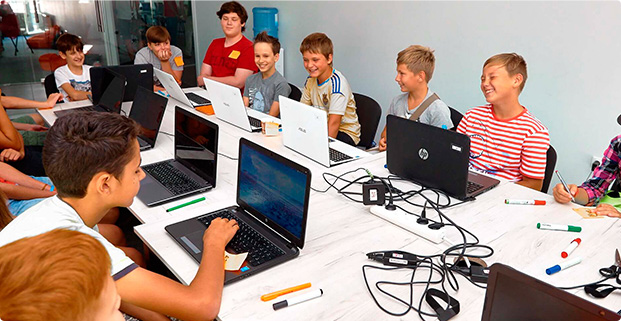

<section class="education">
  <div class="container">
    <p class="education__about-part-1">
      За останні 5 років кількість дітей, які вміють користуватися комп'ютером,
      збільшилася приблизно в 10 разів.
    </p>
    <p class="education__about-part-2">
      Як зазначає більшість дослідників, ці тенденції будуть прискорюватися
      незалежно від шкільної освіти.
    </p>
    <picture class="education_banner_img">
      <source
        media="(max-width: 787px)"
        srcset="
          ../images/education_banner_mob.jpg,
          ../images/education_banner_mob@2x.jpg 2x
        "
      />
      <source
        media="(min-width: 788px)"
        srcset="
          ../images/education_banner_tab.jpg,
          ../images/education_banner_tab@2x.jpg 2x
        "
      />
      <source
        media="(min-width: 1300px)"
        srcset="
          ../images/education_banner_desc.jpg,
          ../images/education_banner_desc@2x.jpg 2x
        "
      />
      
    </picture>
  </div>
</section>
